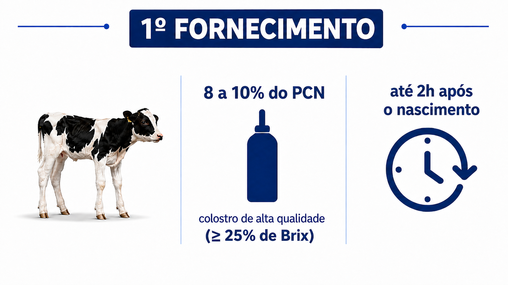
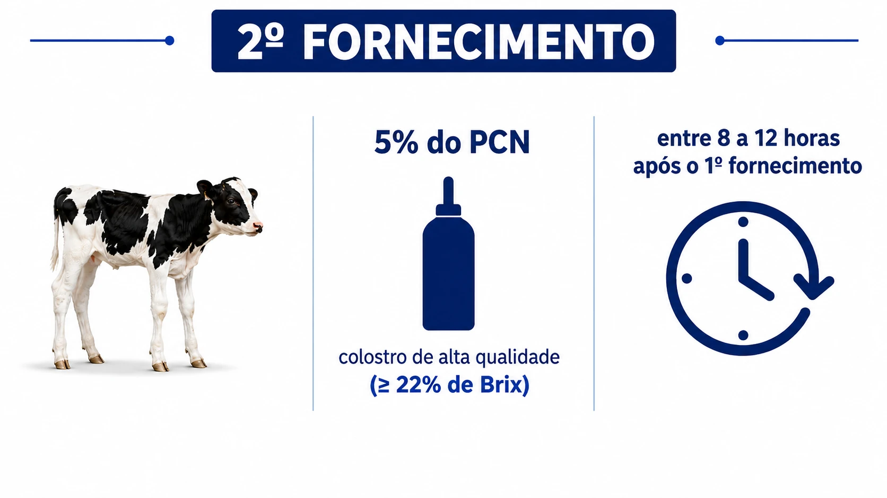
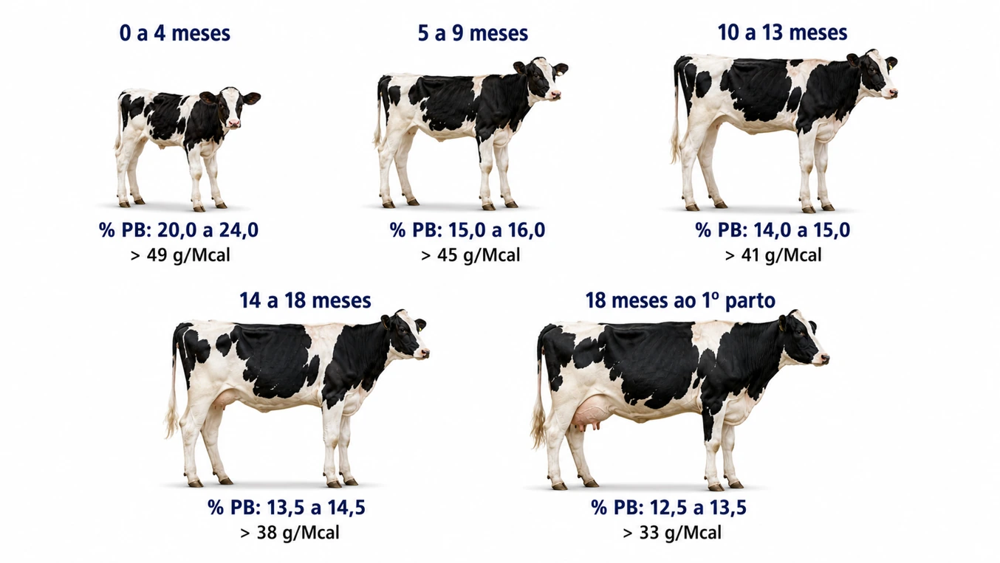
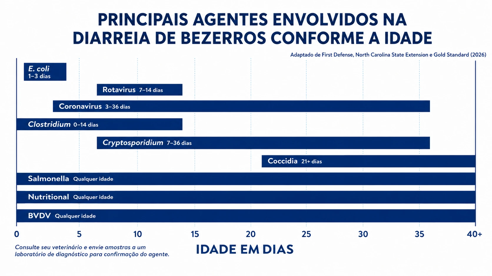
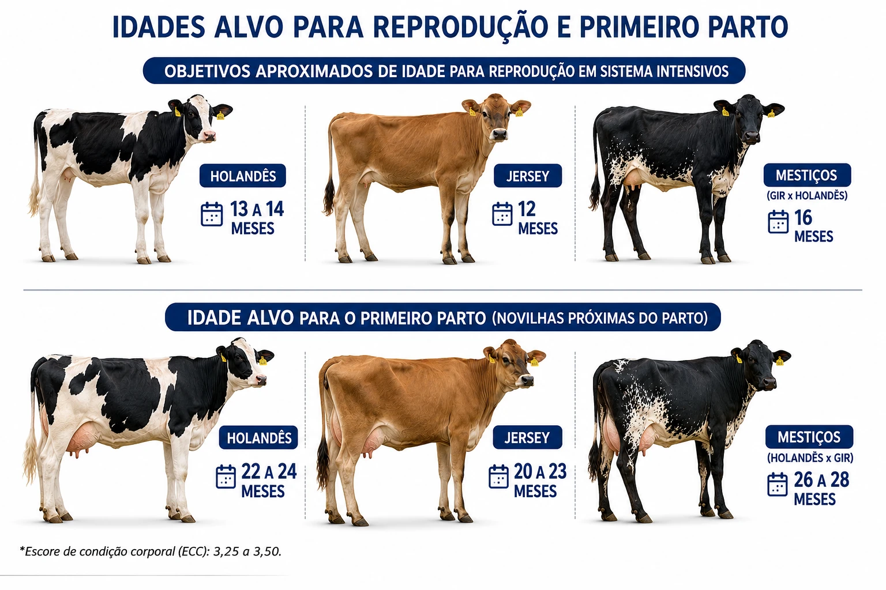

Pasteurização lenta
63°C
Controle contínuo de tempo e temperatura durante todo o processo.

Criação de bezerras e novilhas leiteiras

4ª edição · 2026

Esta edição digital reúne o conteúdo técnico oficial do Padrão Ouro 2026 em formato de livro eletrônico. O material foi organizado para consulta, leitura offline e impressão, preservando a estrutura dos capítulos, tabelas, figuras, referências e biografias fornecidas para o projeto.
O conteúdo técnico é de responsabilidade dos respectivos autores e conselheiros. Direitos de edição reservados à Alta.
Alta Genetics
BR-050, km 164, Parque Hileia
Uberaba, Minas Gerais
Do preparo da matriz à remoção segura da recém-nascida
Manejo imediato da recém-nascida
Obtenção, qualidade, fornecimento e avaliação
| Categoria | CPP (UFC/mL) | Coliformes (UFC/mL) |
|---|---|---|
| Aceitável | < 100.000 | < 10.000 |
| Excelente | < 50.000 | < 5.000 |
| Pasteurizado | < 20.000 | < 100 |
| Momento | Valor-alvo | Interpretação |
|---|---|---|
| 1º Fornecimento | ≥ 24% de Brix | Colostro de excelente qualidade imunológica. |
| 2º Fornecimento | ≥ 22% de Brix | Colostro de boa qualidade imunológica. |


| Categoria | Proteína sérica total (g/dL) | Brix sérico (%) | Percentual de bezerras em cada categoria |
|---|---|---|---|
| Excelente | ≥ 6,2 | ≥ 9,4 | > 50% |
| Boa | 5,8 a 6,1 | 8,9 a 9,3 | ~ 30% |
| Aceitável | 5,1 a 5,7 | 8,1 a 8,8 | ~ 15% |
| Ruim | < 5,1 | < 8,1 | < 5% |
| Brix do colostro | Massa de IgG presente* | Volume de colostro a ser adicionado na dieta líquida por dia |
|---|---|---|
| 22% de Brix | 62,8 g | 955 ml |
| 23% de Brix | 68,4 g | 877 ml |
| 24% de Brix | 74,1 g | 810 ml |
| 25% de Brix | 79,8 g | 752 ml |
| 26% de Brix | 85,4 g | 703 ml |
| 27% de Brix | 91,1 g | 659 ml |
| 28% de Brix | 96,8 g | 620 ml |
| 29% de Brix | 102,4 g | 586 ml |
| 30% de Brix | 108,1 g | 555 ml |
Dieta líquida, sólida e desaleitamento
| Parâmetro | Valor de referência | Observação |
|---|---|---|
| pH | 6,5 a 8,5 | — |
| Turbidez | < 5 uT | Portaria GM/MS Nº 888 |
| Sólidos totais dissolvidos | < 1.000 mg/L | Acima de 3.000 mg/L pode causar diarreia temporária; acima de 7.000 mg/L não deve ser fornecida aos animais. |
| Nitrato (NO₃⁻) | < 44 mg/L | Acima de 132 mg/L pode ser prejudicial a longo prazo. |
| Nitrato-Nitrogênio (NO₃⁻-N) | < 10 mg/L | Acima de 100 mg/L representa risco de morte. |
| Nitrito (NO₂⁻-N) | < 1,0 mg/L | Portaria GM/MS Nº 888 |
| Sulfato — bezerras | < 500 mg/L | — |
| Sulfato — vacas adultas | < 1.000 mg/L | — |
| Alumínio | < 10,0 mg/L | Potencialmente preocupante acima desse limite. |
| Arsênio | < 0,01 mg/L | — |
| Bário | < 10,0 mg/L | Potencialmente preocupante acima desse limite. |
| Cádmio | < 0,05 mg/L | Potencialmente preocupante acima desse limite. |
| Chumbo | < 0,10 mg/L | Potencialmente preocupante acima desse limite. |
| Cobalto | < 1,0 mg/L | — |
| Cobre | < 1,3 mg/L | — |
| Ferro | < 0,3 mg/L | Acima desse valor pode reduzir o consumo de água. |
| Flúor | < 2,0 mg/L | Acima de 2,4 mg/L pode causar fluorose. |
| Magnésio | < 125 mg/L | Potencialmente preocupante acima desse limite. |
| Manganês | < 0,05 mg/L | Acima desse valor pode afetar a palatabilidade da água. |
| Molibdênio | < 0,06 mg/L | — |
| Níquel | < 1,0 mg/L | — |
| Selênio | < 0,05 mg/L | — |
| Sódio | < 200 mg/L | — |
| Vanádio | < 0,10 mg/L | — |
| Zinco | < 5,0 mg/L | — |
| Coliformes termotolerantes — vacas adultas | < 1.000 UFC/100 mL | — |
| Coliformes termotolerantes — bezerras | Ausência em 100 mL | — |
Fonte: NASEM (2021). Turbidez e nitrito: Portaria GM/MS Nº 888 (Ministério da Saúde, Brasil, 2021).

| Nutriente | Unidade | Exigência (MS da dieta) |
|---|---|---|
| Cálcio | % | 0,70 |
| Fósforo | % | 0,35 |
| Magnésio | % | 0,15 |
| Potássio | % | 0,33 |
| Sódio | % | 0,18 |
| Cloro | % | 0,14 |
| Enxofre | % | 0,20 |
| Cobre | mg/kg | 18 |
| Cobalto | mg/kg | 0,20 |
| Iodo | mg/kg | 0,73 |
| Manganês | mg/kg | 59 |
| Zinco | mg/kg | 51 |
| Selênio | mg/kg | 0,3 |
| Vitamina A | UI/kg | 3.546 |
| Vitamina D | UI/kg | 1.032 |
| Vitamina E | UI/kg | 26 |
Valores estimados com base nas exigências descritas pelo NASEM (2021), considerando bezerras pós-desaleitamento com aproximadamente 120 kg de peso corporal e ganho médio diário de 800 g.
| Variável | 112 kg | 224 kg | 336 kg | 420 kg | 560 kg |
|---|---|---|---|---|---|
| % do peso adulto | 16,0 | 32,0 | 48,0 | 60,0 | 80,0 |
| Consumo de MS, kg/dia | 3,3 | 6,0 | 8,0 | 9,3 | 10,9 |
| PB em % da MS | 21,1 | 16,0 | 14,0 | 13,0 | 13,5 |
| Energia metabolizável, Mcal/kg MS | 3,0 | 2,5 | 2,4 | 2,4 | 2,9 |
| Energia metabolizável, Mcal/dia | 9,9 | 15,0 | 19,2 | 22,3 | 31,6 |
| Exigência de proteína metabolizável, g/dia | 498 | 672 | 790 | 848 | 1034 |
| Mínimo de proteína metabolizável/energia metabolizável | 49 | 45 | 41 | 38 | 33 |
Fonte: NASEM (2021).
Metas de crescimento e desenvolvimento
| Fase (% do peso corporal adulto) | 550 kg — Peso-alvo | 550 kg — Ganho aproximado | 750 kg — Peso-alvo | 750 kg — Ganho aproximado |
|---|---|---|---|---|
| Nascimento (6% do peso adulto) | 32 kg | 750 g/dia | 40 kg | 750 g/dia |
| Início do desaleitamento — mínimo de 60 dias | 77 kg | 867 g/dia | 80 kg | 867 g/dia |
| Desaleitamento — mínimo de 75 dias | 90 kg | 611 g/dia | 120 kg | 875 g/dia |
| Primeiro serviço (55% do peso adulto) — em torno de 14 meses | 305 kg | 801 g/dia | 410 kg | 1.093 g/dia |
| Peso ao parto (95% do peso adulto) — em torno de 23 meses | 525 kg | – | 710 kg | – |
| Peso após o primeiro parto (85% do peso adulto) — em torno de 23 meses | 470 kg | – | 635 kg | – |
Fonte: Gold Standard (2023) e NASEM (2021). O tamanho adulto de um rebanho é definido como o peso corporal médio das vacas de terceira lactação, no meio da lactação.
As metas de ganho de peso podem variar conforme o nível nutricional e o sistema de criação adotado.
Prevenção, diagnóstico e acompanhamento
| Escore | Parâmetros |
|---|---|
| 0 | Umbigo cicatrizado, sem aumento de volume, dor ou secreção. Vasos umbilicais não palpáveis ou com diâmetro ≤ 1 cm. |
| 1 | Umbigo sem alterações externas evidentes, porém com sensibilidade à palpação e/ou suspeita de envolvimento interno. Ausência de secreção. |
| 2 | Umbigo com aumento de volume, dor à palpação e/ou presença de secreção (com ou sem drenagem de pus). Vasos umbilicais palpáveis e com diâmetro > 1 cm, podendo indicar envolvimento interno. |
| Escore | Parâmetros |
|---|---|
| 0 | Consistência normal: Fezes firmes, bem formadas, coloração amarronzada, com períneo e cauda limpos e secos. |
| 1 | Fezes pastosas a semiformadas, com leve perda de consistência, porém ainda mantendo formato. Sem sujidade evidente no períneo. |
| 2 | Fezes pastosas com maior teor de água, sem formato definido, espalhando-se sobre a superfície. Presença de sujidade no períneo e/ou cauda. |
| 3 | Fezes líquidas e aquosas, com grande volume de líquido e intensa sujidade no períneo e cauda. |
Fonte: Adaptado de McGuirk (2008). Fezes com escore 2 e 3 são consideradas compatíveis com diarreia.

| Escore | Temperatura retal | Tosse | Secreção nasal | Secreção ocular | Posicionamento das orelhas |
|---|---|---|---|---|---|
| 0 | 37,7 a 38,2 | Ausente | Serosa | Serosa | Normal |
| 1 | 38,3 a 38,8 | Presente e única, quando estimulada | Pouca quantidade e unilateral | Pouca quantidade | Balançar das orelhas ou cabeça |
| 2 | 38,9 a 39,3 | Presente e repetidas, quando estimulada, ou ocasionais, quando espontâneas | Excessiva, mucosa e bilateral | Moderada quantidade bilateral | Ligeiramente pendente, unilateral |
| 3 | ≥ 39,4 | Presente, repetidas e espontâneas | Abundante, mucopurulenta e bilateral | Intensa quantidade e bilateral | Pendentes intensamente, bilateral ou torção da cabeça |
Fonte: McGuirk (2008). Em países tropicais, bezerras que apresentam pelo menos dois parâmetros com escores 2 ou 3 são classificadas como positivas para doença respiratória (Decaris et al., 2022).
| Doença | Aleitamento | Desaleitamento até 120 dias | 121 a 180 dias | > 180 dias |
|---|---|---|---|---|
| Infecção umbilical | < 5% | – | – | – |
| Diarreia¹ | < 25% | < 2% | < 1% | – |
| Doenças respiratórias | < 10% | < 10% | < 2% | – |
| Tristeza parasitária² | < 3% | – | < 35% | < 6% |
¹ Considera-se diarreia animais com escore fecal ≥ 2.
² Percentual de animais que necessitaram de tratamento.
| Indicador | % |
|---|---|
| Natimortos (260 dias de gestação até 24 horas de vida) | 2,5% |
| Mortes até 75 dias de vida | 3% |
| Vendas e descartes até 75 dias de vida | 1% |
| Mortes entre 75–365 dias de vida | 2% |
| Vendas e descartes entre 75–365 dias de vida | 2% |
| % que não emprenham (e são descartadas) | 5% |
| % que emprenharam, mas não pariram (abortaram e/ou foram descartadas por outros motivos) | 3% |
| % de sobrevivência de novilhas | 85%* |
* Taxa de conclusão de novilhas, quando calculada considerando apenas as bezerras nascidas vivas.
Prevenção, limpeza e controle de risco
Ambientes para aleitamento e pós-aleitamento
| Idade do animal | Peso corporal do animal | Mínimo de espaço de cocho por animal | Mínimo de espaço de cama |
|---|---|---|---|
| 2 a 6 meses | 80 a 180 kg | 46 cm | 2,8 m² |
| 6 a 8 meses | 180 a 230 kg | 38 cm | 3,7 m² |
| 8 a 12 meses | 230 a 320 kg | 43 cm | 4,6 m² |
| 12 a 16 meses | 320 a 410 kg | 48 cm | 5,6 m² |
| 16 a 20 meses | 410 a 500 kg | 56 cm | 6,5 m² |
| 20 meses ao pré-parto | 500 a 590 kg | 61 cm | 7,4 m² |
Fonte: Graves et al. (2008).
Manejo de novilhas gestantes
| Tipo de sêmen | Alvo de taxa de concepção no primeiro serviço | Alvo de taxa de prenhez* |
|---|---|---|
| Convencional (Leite ou corte) | 70% | 47% |
| Sexado (Leite ou corte) | 60% | 37% |
| Fertilização in vitro/embrião | 60% | 40% |
Fonte: Lauber e Fricke (2022). *Porcentagem de novilhas que ficaram gestantes em relação ao número total de novilhas elegíveis para ficarem gestantes em um determinado período de 21 dias.

4ª edição · 2026
Referência técnica para criação de bezerras e novilhas leiteiras.
altaleite.github.io/padrao-ouro